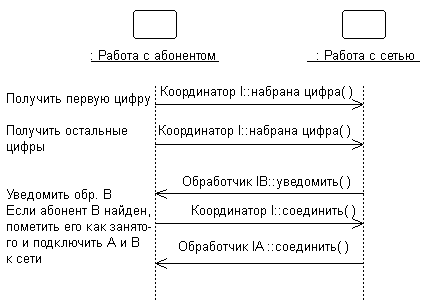
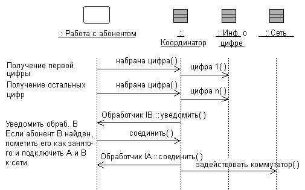

|
Цель:
|
Описать внутреннее поведение подсистемы.
Выявить дополнительные классы проекта и подсистемы проекта, необходимые для удовлетворения
требований к поведению подсистем.
|
Внешнее поведение подсистем определяется, главным образом, их интерфейсами. Если подсистема предоставляет интерфейс,
она обязуется поддерживать все операции, определенные для этого интерфейса. Операция, в свою очередь, может быть
реализована в качестве операции элемента проекта (например, класса
проекта или подсистемы проекта), входящего в подсистему. Для выполнения операции
может требоваться взаимодействие с другими элементами проекта.
Взаимодействие элементов модели в рамках подсистемы должно быть описано с помощью циклограмм, показывающих, как
реализовано поведение подсистемы. Каждая операция интерфейса, предоставляемого подсистемой, должна быть снабжена хотя
бы одной циклограммой. Циклограммы являются составными элементами подсистем и применяются для описания их
внутреннего поведения.
Если поведение подсистемы сильно зависит от состояния и представляет собой одну или несколько нитей управления, лучше
всего для описания такого поведения подойдут конечные автоматы. Конечные автоматы обычно применяются вместе с активными
классами для декомпозиции нитей управления системы (в данном случае - подсистемы) и описываются с помощью диаграмм
состояний (см. Рекомендация:
Диаграмма состояний. В системах реального времени конечные автоматы также применяются для
описания поведения рабочего продукта Рабочий
продукт: Капсула. Внутри подсистемы могут находиться независимые нити выполнения,
представленные активными классами.
В системах реального времени для инкапсуляции таких нитей будет применяться Рабочий продукт: капсула.
Пример:
Взаимодействие подсистем, обеспечивающих определенное поведение системы, можно выразить с помощью следующих циклограмм:

На этой диаграмме показано, как интерфейсы подсистем применяются для выполнения последовательности операций. В
частности, для подсистемы Network Handling указаны конкретные интерфейсы (в данном случае - ICoordinator) и операции,
которые она должна поддерживать. Кроме того, на диаграмме видно, что подсистема NetworkHandling зависит от интерфейсов
IBHandler и IAHandler.
Взглянув внутрь подсистемы, можно увидеть, как реализован интерфейс ICoordinator:

Класс Coordinator выступает в роли посредника для интерфейса ICoordinator и отвечает за обработку операций интерфейса и
координацию его поведения.
На "внутренней" циклограмме показана полная структура классов интерфейса, что должно произойти для выполнения функций
подсистемы, и какие классы отправляют сообщения вовне подсистемы. Такие диаграммы, иллюстрирующие внутреннюю структуру
подсистем, крайне важны для подсистем со сложной структурой. Они упрощают изучение поведения подсистем и повторное
использование подсистем в различных контекстах.
В процессе создания диаграмм "реализации интерфейсов" может возникнуть необходимость создания новых классов и подсистем
для обеспечения требуемого поведения. Этот процесс схож с процессом, определенным в дисциплине анализа вариантов
использования, но вместо вариантов использования в роли объектов анализа выступают операции интерфейса. Для каждой
операции интерфейса нужно установить множество классов (или внутренних подсистем), которые нужны для выполнения
операции. Создайте новые классы (подсистемы) там, где имеющихся классов и подсистем недостаточно для обеспечения
необходимого поведения, но сначала попытайтесь воспользоваться существующими классами.
При создании новых элементов проекта необходимо пересматривать содержание и границы подсистем. Постарайтесь избежать
создания одинаковых классов в разных подсистемах. Наличие таких классов - косвенный признак неоптимального
формулирования границ подсистемы. Регулярно возвращайтесь к задаче Задача:
Определение элементов проекта для коррекции баланса ответственности подсистем.
Иногда полезно создать две отдельные внутренние модели подсистемы, иллюстрирующие подсистему с точки зрения клиентов и
с точки зрения реализаторов. В спецификацию можно включить "идеальные" классы и взаимодействия, для того чтобы описать
поведение подсистемы в терминах идеальных классов и взаимодействий. С другой стороны, спецификация системы для
реализаторов отражает видение реализации системы и может постепенно эволюционировать в реализацию.
Дополнительные сведения о спецификации и реализации подсистемы проекта приведены в разделе Рекомендация по рабочему продукту: Подсистемы проекта, реализация и спецификация
подсистем.
|